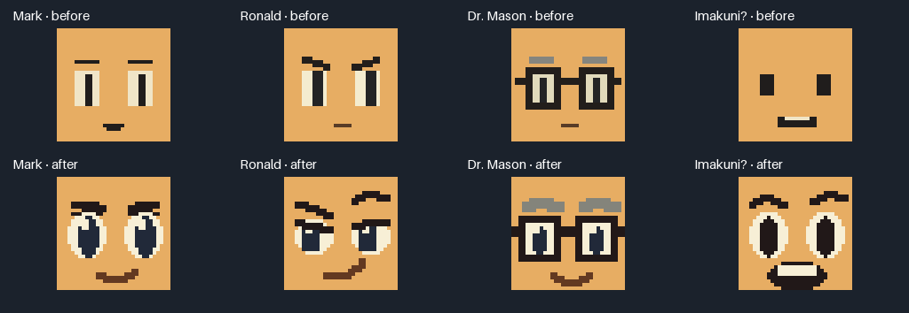
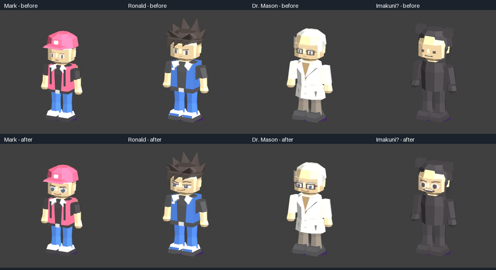

Four distinct faces, with geometry, skin palette and aliases preserved. Design notes · Validation
Texture paint below is enlarged without filtering. It is source artwork, not emulator output.

Blender asset previews below compare the unchanged models with the new facial paint. Native gameplay and VI captures are reviewed separately.
